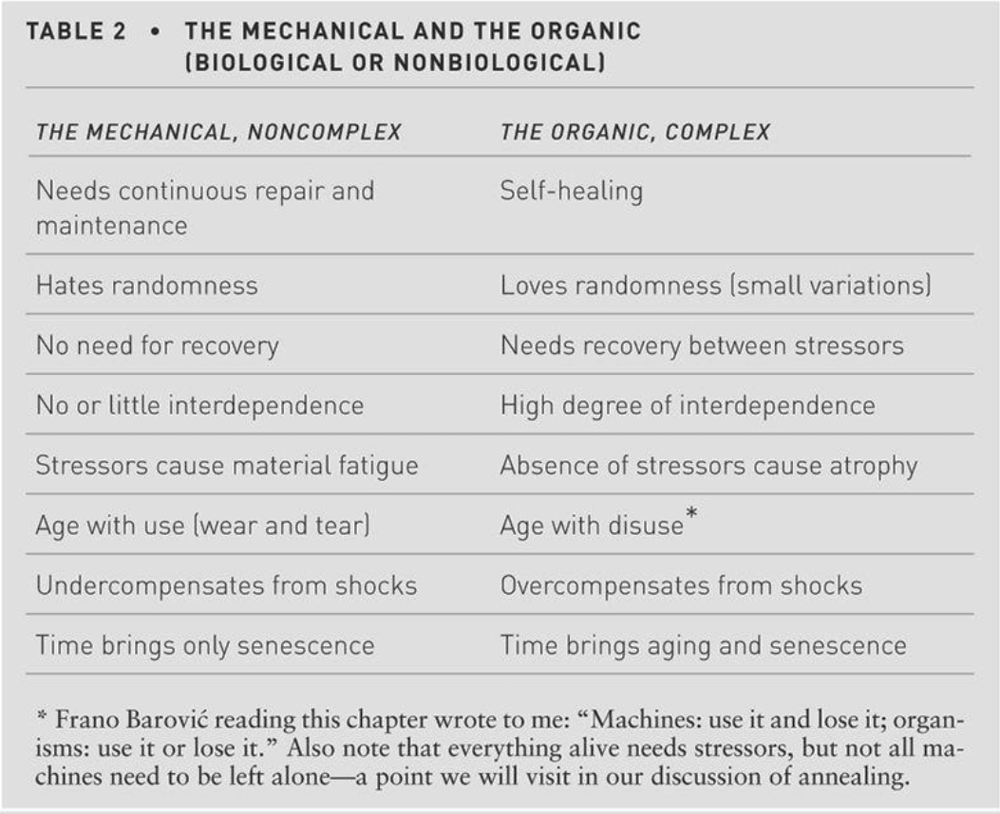

organic and mechanical are different, organisms are antifragile, also for human-beings. But in modern society, humans all live longer but weak, because the environment is so fragile. Unlike natural environment, their working environment, medicine and living quarters all making them weaker and weaker. Unlike mechanicals, organisms will become stronger because of self-repair in some point.
The Complex
The man-made mechanicals are complicated but not complex, If you break them down, they don’t cause a ripple effect. But human society or ecology is complex, if you exterminate a specific animal, you will disrupt a food chain.
STRESSORS ARE INFORMATION
Humans tend to do better with acute than with chronic stressors, from the new finding of the bone, maybe not only aging causes atrophy of bone, but also the nouse of bone causes aging.
From that point, we can get to know, some acute things like shocking emotions will stimulate our body, but some slowly but unstoppable stresses will hurt our body (mortgage and working pressure, deadline or future repayment).

Equilibrium, Not Again
Don’t want to keep in equilibrium, because it’s mean death, you need movements and changes.
CRIMES AGAINST CHILDREN
The pharmaceutical companies are trying to kill our children, so many Americans beyond high school ages are on antidepressant. We always think frustration is bad for usand need to kill, but we also kill the variability.
Punished by Translation
Language acquisition not from comfort, but from a jail like environment, you need a urgent streess to force yourself to speak or listening.
Touristification
Touristification is the life of tourist, everything is scheduled for them and it sucks the randomness.
The Secret Thirst for Chance
The natural environment is full of randomness, unlike doing the same excerises on the flat ground in gym, nature is full of dangerous, like you see a wild life and run away as soon as possible, nature is never boring! It has no boss, no homework, no academic grades, no chronic stress injury.